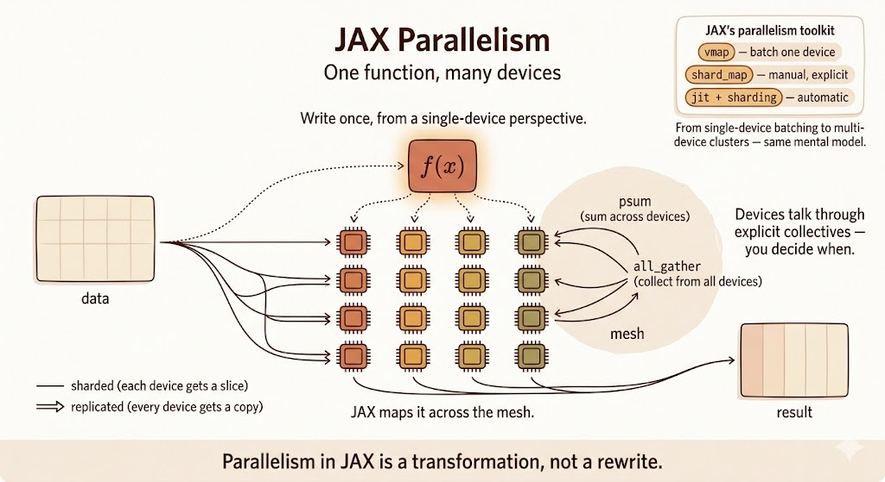

JAX NumPy

JAX NumPy looks like NumPy, but the programming model is different. The syntax is familiar, while the execution model is designed for transformation, compilation, automatic differentiation, vectorization, and accelerator parallelism.
The useful mental model:
- NumPy is an eager array library.
- JAX NumPy is a NumPy-like frontend for compiled, transformable numerical programs.
That difference explains most of the surprises.
Eager vs Compiled
NumPy and PyTorch usually execute operations eagerly: each operation runs as Python reaches it.
JAX can also run eagerly, but its power comes from jax.jit, which traces a function and compiles it through XLA.
The JIT workflow is:
- Tracing: JAX traces the function for a given input shape and dtype.
- Optimization: XLA optimizes the traced computation.
- Execution: later calls with compatible shapes and dtypes reuse the compiled program.
import jax
import jax.numpy as jnp
import numpy as np
def np_function(x):
return np.sin(np.cos(x)) * np.tanh(x)
def jnp_function(x):
return jnp.sin(jnp.cos(x)) * jnp.tanh(x)
jit_function = jax.jit(jnp_function)
x_np = np.ones((1000, 1000))
x_jnp = jnp.ones((1000, 1000))
%timeit np_function(x_np)
%timeit jit_function(x_jnp).block_until_ready()The first JIT call pays compilation cost. The later calls are where compiled execution can be much faster, especially on accelerators.
Mutable vs Immutable Arrays
NumPy arrays are mutable:
import numpy as np
x = np.array([1, 2, 3])
x[0] = 10JAX arrays are immutable. You do not modify an array in place. Instead, you create a new array with the requested update:
import jax.numpy as jnp
x = jnp.array([1, 2, 3])
y = x.at[0].set(10)This is part of JAX’s functional style. It makes transformations such as jit, grad, and vmap easier to reason about.
Views, Copies, and Compiler Optimization
NumPy operations such as slicing, transposing, or reshaping often return views. A view can share memory with the original array, so changing one can affect the other.
JAX arrays behave more functionally. Operations conceptually produce new values rather than mutable views.
That does not necessarily mean JAX always performs wasteful copies. Under jit, XLA can optimize away intermediate arrays and fuse operations when it is safe to do so.
The important difference is semantic:
- NumPy exposes memory-sharing behavior to the user.
- JAX presents immutable values and lets the compiler optimize the implementation.
Random Number Generation
NumPy uses implicit global random state:
import numpy as np
np.random.seed(0)
print(np.random.normal())
print(np.random.normal())Each call advances hidden global state.
JAX uses explicit random keys:
from jax import random
key = random.PRNGKey(0)
print(random.normal(key))
print(random.normal(key))Both calls return the same value because the same key is reused. To get new random values, split the key:
key = random.PRNGKey(0)
key1, key2 = random.split(key)
print(random.normal(key1))
print(random.normal(key2))Explicit randomness is more verbose, but it is reproducible and parallelism-friendly. There is no hidden global state that silently changes across devices or transformations.
Automatic Vectorization with vmap
NumPy relies heavily on broadcasting and manual vectorization. JAX adds jax.vmap, which transforms a function written for one example into a batched function.
import jax.numpy as jnp
from jax import vmap
def predict(W, b, x):
return jnp.dot(W, x) + b
W = jnp.ones((3, 4))
b = jnp.ones(3)
batch_x = jnp.ones((10, 4))
batch_predict = vmap(
predict,
in_axes=(None, None, 0),
)
batch_result = batch_predict(W, b, batch_x)Here:
Wis not mapped overbis not mapped overxis mapped over its first axis
The result has shape (10, 3): one prediction for each input in the batch.
This is one of JAX’s central ideas: write the single-example function first, then transform it.
Pytrees
A pytree is a nested Python container whose leaves are values.
Common pytree containers include:
- dictionaries
- lists
- tuples
- dataclasses registered as pytrees
Pytrees are important because model parameters, optimizer state, gradients, and metrics are rarely single arrays. They are nested structures.
import jax
import jax.numpy as jnp
params = {
"layer1": {
"w": jnp.array([1, 1]),
"b": 2,
},
"layer2": {
"w": 3,
"b": 4,
},
}
new_params = jax.tree.map(lambda x: x * 2, params)This applies the function to every leaf while preserving the structure:
{
"layer1": {"w": jnp.array([2, 2]), "b": 4},
"layer2": {"w": 6, "b": 8},
}This is why JAX training code can update whole parameter trees with compact transformations.
Explicit Parallelism with shard_map
vmap maps a function over a batch axis. shard_map maps a function over shards of data across a mesh of devices.
The key idea is that you write the computation from the perspective of one shard, while JAX runs it across devices according to the sharding specification.
shard_map is useful when you want explicit control:
- how inputs are partitioned
- how outputs are assembled
- where collective communication happens
For example, a matrix multiplication can be split across a 2D mesh:
from functools import partial
import jax
import jax.numpy as jnp
from jax.sharding import PartitionSpec as P
mesh = jax.make_mesh((4, 2), ("x", "y"))
a = jnp.arange(8 * 16.0).reshape(8, 16)
b = jnp.arange(16 * 4.0).reshape(16, 4)
@partial(
jax.shard_map,
mesh=mesh,
in_specs=(P("x", "y"), P("y", None)),
out_specs=P("x", None),
)
def matmul_basic(a_block, b_block):
c_partial = jnp.dot(a_block, b_block)
c_block = jax.lax.psum(c_partial, "y")
return c_block
c = matmul_basic(a, b)Inside matmul_basic, the code describes local work on one block. The psum is the explicit collective that sums partial results across the "y" mesh axis.
This is different from automatic compiler partitioning. With shard_map, communication is part of the program you write.
Comparison
| Feature | NumPy | JAX NumPy | Why it matters |
|---|---|---|---|
| Execution | eager | eager or JIT compiled | XLA can optimize whole functions |
| Mutability | mutable arrays | immutable arrays | functional transformations are easier |
| Updates | x[i] = y |
x.at[i].set(y) |
updates return new values |
| Views/copies | views are common | value semantics | compiler handles optimization |
| Randomness | global state | explicit keys | reproducibility and parallelism |
| Autodiff | external tools | jax.grad |
built into the transformation system |
| Batching | manual vectorization | jax.vmap |
lift single-example code to batches |
| Hardware | mostly CPU | CPU, GPU, TPU | accelerator-first array programming |
| Multi-device control | outside NumPy | shard_map and sharding APIs |
explicit parallel programs |
Colab
Summary
- JAX NumPy mirrors much of the NumPy API, but the execution model is different.
jax.jittraces and compiles numerical functions through XLA.- JAX arrays are immutable; updates return new arrays.
- Randomness is explicit through PRNG keys.
vmapturns single-example code into batched code.- Pytrees let JAX transform nested parameter and state structures.
shard_mapgives explicit control over multi-device sharded computation.